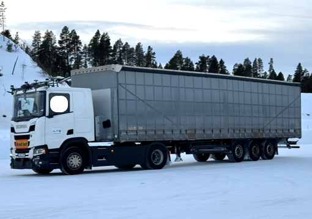
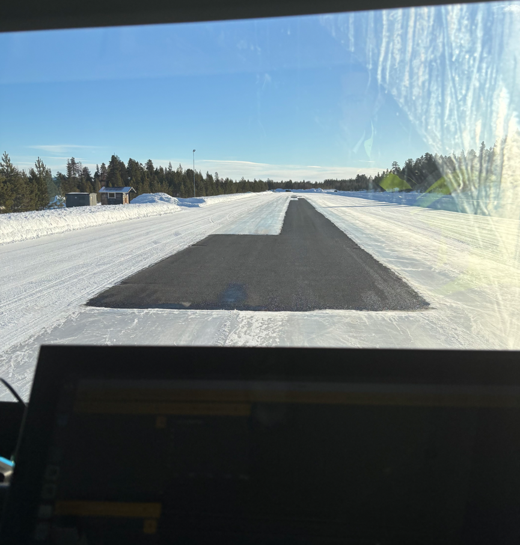
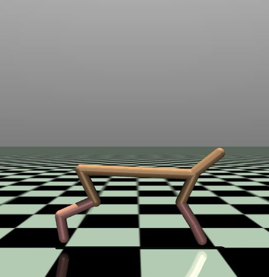
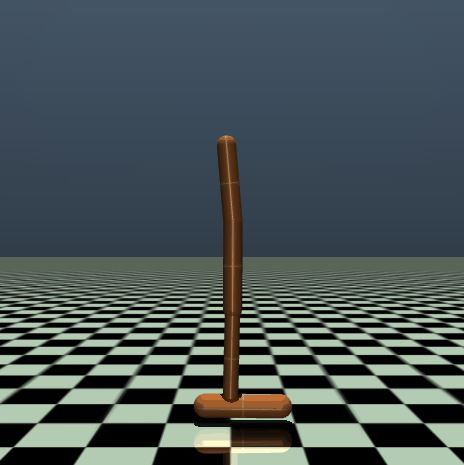
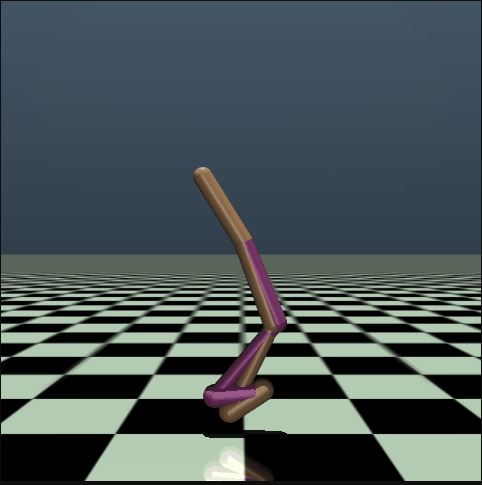
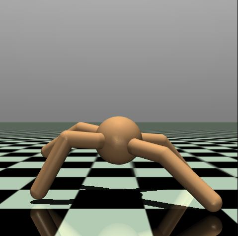

Experiments
Real-World Data Collection
The truck dataset is collected using a full-scale, 37.5-ton autonomous truck–trailer platform. The dataset includes comprehensive logs from various high-fidelity sensors. Special emphasis was placed on capturing edge cases and distribution shifts, particularly under challenging winter conditions. Routine tests included maneuvers on a high-speed test track and test drives on public highways in different weather conditions including sun, snow and rain. Driving scenarios included straight line driving, negotiating curves and slopes, lane changes, cut-ins, stopping, following other actors and highway driving.
- Truck & Trailer: A 37.5-ton tractor–semitrailer operating close to its physical traction limits, capturing realistic heavy-vehicle dynamics under extreme winter conditions.
- μ-Split: Sections of roadway with asymmetric friction, producing abrupt left–right force imbalances that challenge stability, braking performance, and model adaptation.
- Test maneuvers: A diverse set of maneuvers, including emergency braking, evasive lane changes, high-speed cornering, and transitions across changing surface types.

Truck & Trailer System
Full-scale articulated truck–trailer platform tested on snow, ice, and μ-split surfaces.

µ-Split Scenario
Asymmetric friction stressing rapid adaptation to shifting tire forces.
Simulated Environments
Beyond the real truck data, we evaluate MetaKoopman on a suite of MuJoCo-based control tasks that induce structured distribution shifts:
- HalfCheetah-Slope: varying ground slope causes persistent changes in dynamics.
- Hopper-Gravity: altered gravitational acceleration changes stability and control.
- Walker-Friction: contact friction ranges from slippery to sticky terrain.
- Ant-DisabledJoints: randomly disabled legs model structural failures.
- Panda-Damping: time-varying joint damping perturbs manipulation dynamics.

HalfCheetah-Slope
Varying ground slope.

Hopper-Gravity
Changing gravity.

Walker-Friction
Varying contact friction.

Ant-DisabledJoints
Random joint failures.

Panda-Damping
Time-varying damping.
Predictive Performance under Distribution Shifts
We report validation MSE (mean ± standard deviation) across methods and environments. MetaKoopman consistently achieves the best predictive accuracy on both the truck dataset and the simulated benchmarks. Insert the numerical values from the paper into the cells marked “see paper”.
| Environment | MetaKoopman | BayesianMAML | GrBAL | DKO | BayesianNN | EMLP | NeuralODE |
|---|---|---|---|---|---|---|---|
| Truck Dataset | 0.0596 ± 0.0021 | 0.0888 ± 0.0100 | 0.0917 ± 0.0023 | 0.2042 ± 0.1674 | 0.2923 ± 0.0120 | 0.2589 ± 0.0053 | 0.0926 ± 0.0022 |
| Hopper-Gravity | 0.0369 ± 0.0019 | 0.0475 ± 0.0027 | 0.0926 ± 0.0016 | 0.0913 ± 0.0051 | 0.1332 ± 0.0116 | 0.1683 ± 0.0000 | 0.0793 ± 0.0078 |
| HalfCheetah-Slope | 0.7490 ± 0.0117 | 0.8808 ± 0.0104 | 1.2800 ± 0.0028 | 1.2927 ± 0.0196 | 1.7008 ± 0.0374 | 1.4395 ± 0.0210 | 1.9981 ± 0.2123 |
| Walker-Friction | 0.52 ± 0.10 | 0.54 ± 0.00 | 0.57 ± 0.07 | 0.59 ± 0.00 | 0.67 ± 0.02 | 0.61 ± 0.03 | 0.64 ± 0.05 |
| Ant-DisabledJoints | 0.21 ± 0.00 | 0.27 ± 0.02 | 0.29 ± 0.00 | 0.27 ± 0.00 | 0.69 ± 0.01 | 0.26 ± 0.04 | 0.46 ± 0.09 |
| Panda-Damping | 0.035 ± 0.002 | 0.05 ± 0.0002 | 0.07 ± 0.002 | 0.06 ± 0.003 | 0.11 ± 0.004 | 0.08 ± 0.02 | 0.07 ± 0.007 |
Uncertainty Calibration
To assess uncertainty quality, we compute the Pearson correlation between predicted variance and squared error over a large held-out set. Higher correlation means uncertainty peaks where the model tends to make larger errors. MetaKoopman yields the best calibration across all evaluated datasets.
| Dataset | MetaKoopman | EMLP | BayesianNN | BayesianMAML |
|---|---|---|---|---|
| Truck Dataset | 0.68 | 0.58 | 0.48 | 0.56 |
| HalfCheetah-Slope | 0.69 | 0.63 | 0.52 | 0.62 |
| Ant-DisabledJoints | 0.72 | 0.59 | 0.53 | 0.58 |
Further ablations on history length, tempering, and inference runtime — including comparisons to Deep Koopman, neural ODEs, Bayesian neural networks, ensembles and GrBAL — are reported in the main paper and appendix.
Truck Trial Scenarios
Finally, we visualize two representative winter-test maneuvers on the full-scale truck–trailer system.
Braking on Polished Ice
Emergency braking on a polished-ice section, stressing longitudinal dynamics and MetaKoopman’s ability to adapt to extremely low friction.
Lane Change Maneuver
High-demand lane change on mixed-friction (µ-split) roads, probing the model’s ability to anticipate lateral dynamics and distribution shifts for safe motion planning.